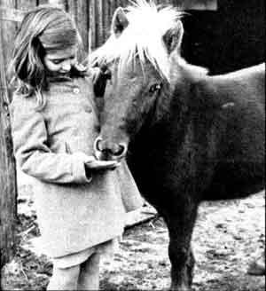
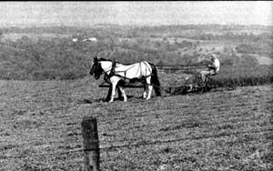
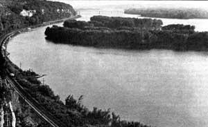

Try The Village Life
By the Mother Earth News editors
March/April 1979
If you're tired of urban living-but not quite ready to tackle the work involved in establishing a
farmstead-John Adney has a solution!
The crowds and smog around our city home finally got to us, and my wife Pat and I were eager to head for clean air and the country life. We weren't, however, sure that we wanted to live in seclusion ... or that we would be happy without such amenities as electricity or indoor plumbing. So, instead of heading "back to the land", we decided to settle in a small town . . . and found that the old-fashioned, easygoing village lifestyle was everything we could have hoped for!
GOOD LIVIN' IN A SMALL COMMUNITY
The state of our family finances made it necessary for me to find employment in our new home before we attempted to move. It didn't take long, however, for me to discover that there was an editorial job open at a local newspaper in Savanna, Illinois. And that was all the encouragement that Pat and I needed . . . we packed up our three children and headed for the small (Savanna's population is about 5,000) village on the banks of the Mississippi River!
In a very short time Pat and I were settled into the community. We found an inexpensive old house to rent (such homes are usually available in small, non-industrialized towns), and-after another year of searching-were able to locate our "dream home", and buy it.
We were glad to discover that housing costs are less in villages, too. For $6,888 (a "good buy", even in 1964!) we got a completely furnished wood frame home on top of the highest bluff in Savanna. Our 30-by 35-foot back lot was soon converted into a garden . . . and the woods surrounded us on every side. We found that deer, 'possum, rabbits, and so forth could be seen every day . . . often by simply looking out of a window, and-after we hung a feeder-our yard was filled with birds all year long. (Once we even caught sight of a bald eagle, and later discovered that this endangered bird still nests along parts of the Mississippi.)
THOSE RURAL REWARDS
With a little "touching up", our home became quite comfortable and (since we relax by working in the garden) the small backyard plot soon provided us with enough vegetables to enjoy some fresh from the ground and preserve the rest ... so our family could be sure to have a "taste of summer" during the long winter months.
And-along with our "own" lettuce, tomatoes, cucumbers, eggplant, parsley, beets, and turnips-we found that our new neighbors were downright insistent that we share in the bounty of their gardens, too! This informal "swappin' " ( of course we returned their gifts in kind) provided us with a wide variety of tasty homegrown fruits and vegetables.
The village also proved to be a wonderful "marketplace" for quality protein. I discovered that local farmers were often willing to sell off a side of beef or a ham after butchering . . . and the finest grocery stores in the world don't offer meat that can approach those delectable cuts ... or eggs equal to the huge beauties that the poultry farmer 'cross the way often peddles for a little extra spend-in' money!
Better yet, the fields and the forests around our village home are chock-full of free-for-the-takin' foods. With the help of the local county agent (and the books he made available to us), Pat and I were soon gathering wild berries and (cautiously) even an occasional mushroom.
Nearer to home, we found a wild "orchard" of mulberry trees and took full advantage of the sweet fruit. (It wasn't long before we'd planted a good number of dwarf cherries, apples, pears, and peaches of our own, too!) Watercress, fennel, lamb's-quarters, and dandelions all grow close enough to the doorstep to be handily gathered, also. And we soon learned to "harvest" our share of game from the woods and fish from the river (not to mention giant bullfrogs . . . whose legs were regarded with suspicion at first but have become a favorite delicacy at our house).
By now you're probably champin' at the bit to try the small-town life for yourself (and maybe gettin' just a little bit hungry, too!). In order to smooth the path for anyone else who'd like to "scale down" his or her life, Pat and I offer the following hints and information:
SMALL TOWN, U.S.A.
Just what is a village, anyway? Well, when this country was being settled, folks tended to gather where there were valuable natural resources . . . things like water, timber, coal, minerals, and (of course) land. And, as their farms grew, these people came to depend upon each other for security, the exchange of goods, and kinship. Soon, they'd built a meetinghouse, a school, a store . . . and the settlement had become a small town! (Of course, today's villages are a bit more organized than those mutually dependent groups were . . . and usually have their own government with a board of trustees, a treasurer, a clerk, and even a police official ... as well as stores, churches, and a post office, too.)
A town is usually considered to be a larger and more developed settlement than a village, although-since the "legal" definitions of these terms tend to vary from one locale to another-this may not be the case in the area you choose for your new home. So, because we're talking about escaping from the metropolis, I'll limit my discussion to "small" towns . . . those with populations of 10,000 or less.
HOWDY, NEIGHBOR!
Don't assume that you'll be happy in any Pumpkin Corners or Deer Hollow just because it's small, however. The fact is that all villages-like all people-have their own personalities. You can't, for one thing, ignore climate and weather conditions: Snow, rain, heat, and humidity should all be taken into account before you make your move.
Remember that the size of the village can make a difference, too. Whereas a town of several thousand can provide an assortment of ideas and philosophies, a settlement with a population of only several hundred will likely be pretty much set in its ways. If you preach reforms in one of these tiny hamlets-even about the way a fair should be run-you'll probably be politely ignored. On the other hand, though, don't jump into overalls, chew on straw, and put on a "back hills" accent, either. The best rule for fitting into small-town life is to be yourself and show folks that you're interested in getting to know them . . . and their area!
In fact, about the easiest way to become accustomed to a place is by visiting with the people for a while. And be sure to meet the local business folks, too. It's usually only a matter of days before a village grocer or postmaster will address a "newcomer" by name!
HOMEHUNTIN'
It's advisable, of course, to do a lot of planning and to find answers to any questions you may have before you make your move. Just to get you started, here's a list of the things we looked into:
[1] WORK: Small towns don't offer the variety of jobs that a city can provide, so-in order to assure that you'll be able to put bread on the table-find work before you invest in a home. You might also consider taking a few courses in basic carpentry and plumbing: These will save you money and frustration ... because such services are often hard to find in villages and towns.
[2] LAND AND HOUSING: Find out what's available for both rent and purchase (the local real estate office can give you an idea). Remember to keep in mind such things as access to public roads and snow removal, too. It's also best to look into property taxes, assessments, and building codes in the area before you commit yourself to a house. The quality of soil in your intended locale is another concern. Contact the U.S. Department of Agriculture (or the nearest county agent) with any questions of this nature that you might have.
[3] FACILITIES: You should find out if the town has a public water supply and sewage system, and whether there are electric and telephone lines convenient to the area . . . unless, of course, you're willing to dig wells, chop firewood, and burn kerosene!
[4] SERVICES: This catch-all category includes such things as the quality of the area's school system ( and the locations of school bus routes) . . . the availability of doctors, dentists, and mechanics . . . and the accessibility of banks, food stores, pharmacies, and a post office.
[5] GROWTH: Finally, look into the town's future. Are there any hints that a major industry has been surveying nearby? (After all. who wants to move to a town only to have it suddenly become a city?)
HOME, SWEET HOME
It's been 15 years since Pat and I moved to our village, and we've found exactly what we were looking for: a home with a clear view of nature, a down-to-earth and rewarding job, neighbors we know by name, and a relaxing, secure lifestyle.
Oh sure, every so often we do itch to see the city. But, when this happens, we go ahead and make the trip back . . . and soon enough remember just why we left the metropolis in the first place.
Do we miss the urban hustle and bustle? Nope, Savanna suits us just fine. You see, besides getting back to a simpler life, we've also come to know "real" people . . . folks who mind their own business and let their neighbors do whatever they please, but who are always there with a helping hand when it's needed. The fact is, we can't imagine a better place, or a better way, to live!
 Left: Our son Matthew constructs a log fort with deadwood scavenged from the nearby forest. RIGHT: Outdoor play?in the fields and woods surrounding our home?has opened up whole new worlds to our ""city"" children ... in all seasons |
 A visit to the neighbor's pony ""Prince"" is always a thrill for our daughter Elisabeth. |
 Though we only have a small garden, there are many productive farms around Savanna that are good sources of inexpensive (and high quality!) food. This farmer still trims his hillside pastures with a horse-drawn mower. |
|
 The majestic Mississippi-an important artery in the transportation of America's industrial and agricultural products-winds below the palisades near Savanna, Illinois. |
|
|